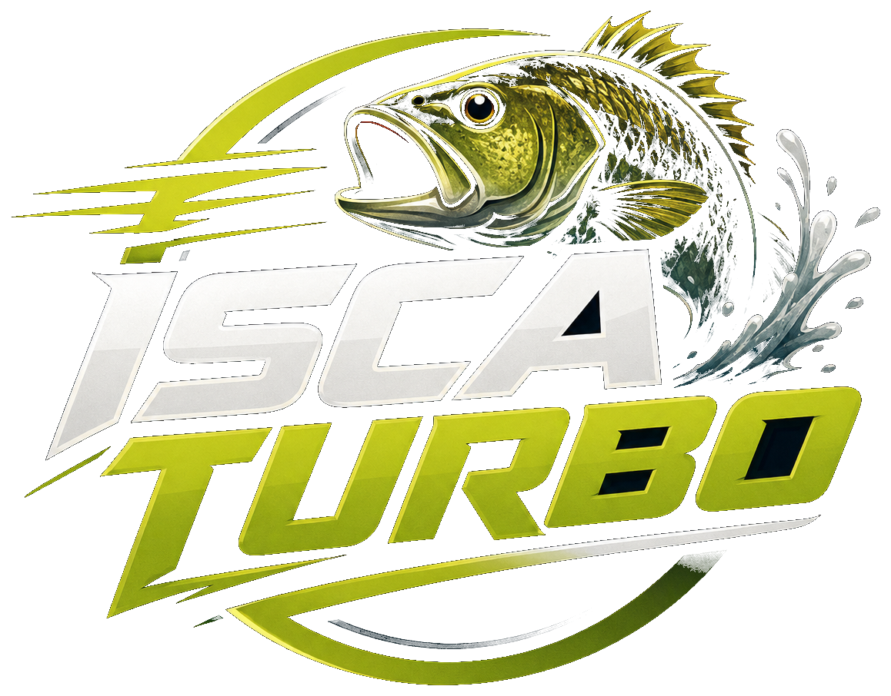

Já ajudamos pescadores a parar de testar isca no escuro e pescar com estratégia.

Pare de testaràs cegas.Pesque comestratégia.
Em 14 dias, você aprende a isca caseira certa para cada peixe e começa a fisgar mais, com menos chute e menos tempo desperdiçado.
Você troca receita, muda anzol, muda ponto e o peixe continua ignorando. O problema não é esforço. É usar isca genérica para peixe específico.
Quero meu sistema de isca agora Acesso imediato e seguroFunciona mesmo se você...
sempre usa a mesma isca para todos os peixes
já gastou dinheiro em receitas que não geraram fisgadas
pesca no fim de semana e precisa de algo simples
já testou misturas aleatórias e ainda perdeu peixe
pesca em lugares diferentes e precisa adaptar por espécie
quer isca caseira sem depender de solução pronta da loja
A isca certa nasce de espécie + cenário.
A maioria dos conselhos é genérica: uma receita para todo peixe, toda água, todo dia. Por isso falha. O Isca Turbo organiza a isca por espécie e situação de pesca.
Sistema de isca por espécie
por espécie, não por ideias aleatórias.
simples para não errar proporção.
por água, clima e comportamento.
para resolver dúvidas reais da pescaria.
Enquanto outros ensinam uma isca genérica, você recebe a receita certa para cada espécie e cenário.
Isso é para você?
Para quem é
- ✓Para pescadores cansados de testar receitas aleatórias.
- ✓Para quem quer escolher a isca certa por espécie, não a mais popular.
- ✓Para quem já desperdiçou ingredientes em misturas que não funcionam.
- ✓Para quem pesca no fim de semana e precisa aplicar rápido.
- ✓Para quem já pesca bem, mas sabe que a escolha da isca custa peixe.
Para quem não é
- ×Não é para quem busca isca mágica sem técnica nenhuma.
- ×Não é para quem se recusa a seguir medidas e só quer improvisar.
- ×Não é para quem nunca pesca e só quer teoria.
- ×Não é para quem espera resultado sem testar em condição real.
Se isso faz sentido, você está pronto para parar de chutar e combinar a isca certa com cada espécie.
Como você aplica na próxima pescaria
Leia a espécie
Entenda o que cada peixe realmente responde e pare de usar a base errada.
Monte a base
Crie a base da sua isca com ingredientes simples e proporção certa.
Ajuste à situação
Adapte a receita de acordo com água, clima e condição de pesca.
Combine por espécie
Aplique receitas específicas para os peixes mais procurados.
Evite erros comuns
Corrija os erros que matam as fisgadas antes que aconteçam.
Você para de ser o pescador que chuta.
Menos desperdício
Você mistura com intenção e para de gastar ingrediente à toa.
Mais confiança
Você chega na água sabendo o que usar em vez de improvisar.
Mais fisgadas
A combinação espécie + isca aumenta suas chances de primeira ação.
Mais estratégia
Você deixa de ser aleatório e começa a pescar com método.
Quem saiu do chute percebeu rápido.
“Parei de jogar a mesma isca em tudo. Agora escolho por espécie e as fisgadas vieram mais rápido.”
Carlos M. - pescador esportivo“Eu gastava ingrediente com mistura aleatória. Agora sei exatamente o que fazer e por quê.”
Renato S. - pescador amador“A organização por espécie mudou tudo para mim. Chega de chutar na água.”
Marcos T. - pescador de rioOferta especial para começar hoje
Você investe uma vez e recebe um sistema de iscas por espécie para consultar antes da próxima pescaria.
Receitas por espécie
Remove a confusão de escolher a mistura errada.
Guia de situação
Ajuda a adaptar quando água, clima ou comportamento mudam.
Medidas simples
Evita proporção ruim e ingrediente perdido.
Suporte VIP
Para tirar dúvidas e ajustar receitas na prática.
dias
Sem risco.
Se em 7 dias você não tiver mais clareza para escolher isca por espécie, devolvemos 100% do seu dinheiro.
Perguntas frequentes
Preciso de ingredientes caros?
Não. As receitas foram pensadas para ingredientes práticos, com substituições simples quando necessário.
Funciona para rio e lago?
Sim. O curso organiza a escolha da isca por espécie e situação, incluindo cenários comuns de pesca.
Sou iniciante. Consigo aplicar?
Sim. A estrutura é direta para pescadores casuais e esportivos aplicarem sem complicar.
E se eu já tenho minhas receitas?
Melhor ainda. Você aprende a ajustar suas receitas por espécie, ponto de uso e condição da água.
Você tem dois caminhos.
Continuar chutando e perdendo peixe ou aprender a isca que combina com cada espécie.
Todo dia que você usa a isca errada é mais um peixe que você deixa ir de graça.
Pescar com a isca certa Começar agora